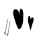
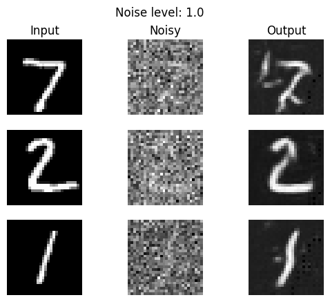
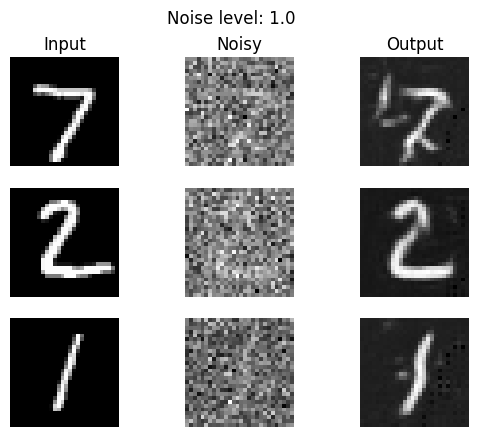

For convinence, parts 1.1, 1.2 and 1.3 have been combined into 1 image. Below is the result.
Here you can see that the image gets gradually denoised as the time step increaseas.
The difussion model is sampled with the prompt "a high quality photo". Below are the images sampled.
Sampled with classifier guidance. Below are the images sampled from the CFG of scale = 7.
The start timestep was varied. Below are the results.

Here is a web based image.

Here is a hand drawn image and below it is the generated image from it.
Here is another hand drawn image and its respective processed image.
Here is an inpainting of the camponile.
Here is an inpainting of my own image.The first image is the original image. The image after is the inpainted image.
Here is the second inpainting of my own image.The first image is the original image. The image after is the inpainted image.
Image to image translation using text condition. The first image is using the camponile and a propmpt of "a rocket ship".
Here are some visual anagrams I generated.

Here is another one of a pencil and a rocket.
Here is another one of a monkey eating bananas and amfalfi coast.
After the denoiser has been trained, here are the results. The first image is the denoiser after being trained for 1 epoch and the next image is after being trained for 5 epochs.
The model was tested out of its distribution since it was trained at sigma = 0.5 noise level. Here are the results.
 

The time based Unet was implemented. Here are the results over the epochs 1, 5, 19.
Epoch 1
Epoch 5
Epoch 19